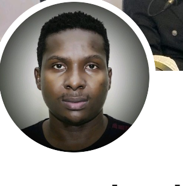

2021
Solution Journalism Fellow
Ready section for fellowship description, organizer, and why it matters professionally.
Rey Bulambo creates films, conversations, and community-centered stories that elevate refugee voices, youth talent, and social impact across borders.

Filmmaker • Podcaster • Acting Coach
Based in Lodwar, Turkana County, Kenya
This version includes ready-to-fill content blocks so biography details can be completed later without redesigning the site.
Award-winning filmmaker recognized for storytelling focused on refugee experiences, youth empowerment, theater practice, and podcast conversations that amplify underrepresented voices.
Add early life story, background, and formative experiences here.
Add academic training, workshops, film education, and mentorship history here.
Add career turning points, institutions, collaborations, and major roles here.
Documentary and narrative work centered on dignity, resilience, and lived experience.
Creative training, acting coaching, and opportunities for refugee and host-community youth.
Ready-to-highlight collaborations with FilmAid Kenya, NGOs, festivals, and media platforms.
Use this section to tell the story of Kakuwud Films: why it started, who it serves, what it produces, and how it contributes to social change through cinema and performance.
Add the origin, mission, and founding context of Kakuwud Films.
Add workshops, productions, youth labs, theater work, and podcast initiatives.
Add the future vision: regional film reach, mentorship, festivals, and global audiences.
Each milestone opens for more details, making it easy to add verified facts later.
Add the earliest storytelling, performance, or media experiences that shaped the filmmaker’s direction.
Add education, workshops, mentorship, and first major productions or collaborations.
Highlight the 2021 fellowship and explain how it influenced reporting, documentary framing, and impact storytelling.
Add leadership milestones, youth development work, notable productions, and community-building efforts.
Use this space to outline upcoming films, festivals, regional collaborations, or international distribution goals.
Some entries are placeholders so verified award history can be inserted quickly.
Ready section for fellowship description, organizer, and why it matters professionally.
Add a festival name, official selection note, or screening milestone here.
Add NGO, media, or community recognition related to storytelling and youth development.
Prepared as a box structure so a full press kit can be added without changing the design.
Replace placeholders with real biography PDFs, headshots, posters, screening notes, technical specs, and interview requests.
“Use this area for a powerful artist statement, press quote, or mission statement that summarizes the purpose of the work.”
This box works well for critics, media praise, or a short signature message from Rey Bulambo.
Click any card to open a larger lightbox view.
Add episode title, guest, streaming link, and one-sentence takeaway.
Add stage productions, acting coaching work, workshop facilitation, and youth performance labs here.
These cards can become articles, essays, or project updates.
Use this card for a future blog article or an essay about filmmaking in community spaces.
Add insights on production, ethics, interviews, editing, or field work.
Share outcomes, reflections, and lessons from training emerging storytellers.
Ready for festivals, screenings, workshops, and speaking invitations.
Add event name, venue, city, and registration link here.
Use for panel invitations, coaching sessions, and public storytelling events.
Add official selection, Q&A, or networking event details.
The form below is ready for Netlify Forms. Replace placeholder contact details as needed.
Social media and collaboration pathways
These buttons are ready to be replaced with real links.
LinkedIn
Replace with professional networking profile.
YouTube
Replace with trailers, interviews, or production channel.
Instagram
Replace with behind-the-scenes and visual updates.